Galerie photos
Dans cette galerie vous trouverez :
- des photos de nos circuits
- une vidéo de présentation
- le son du désert
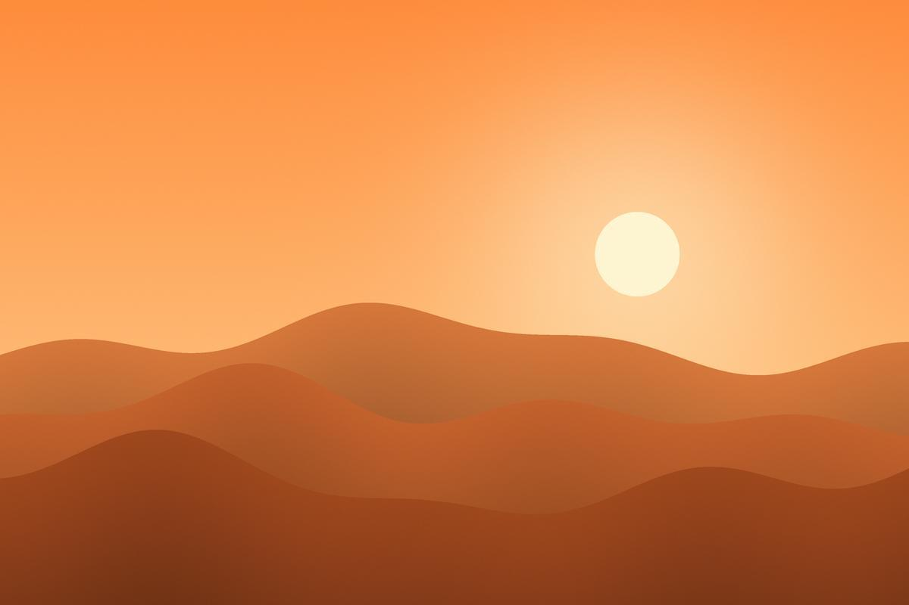
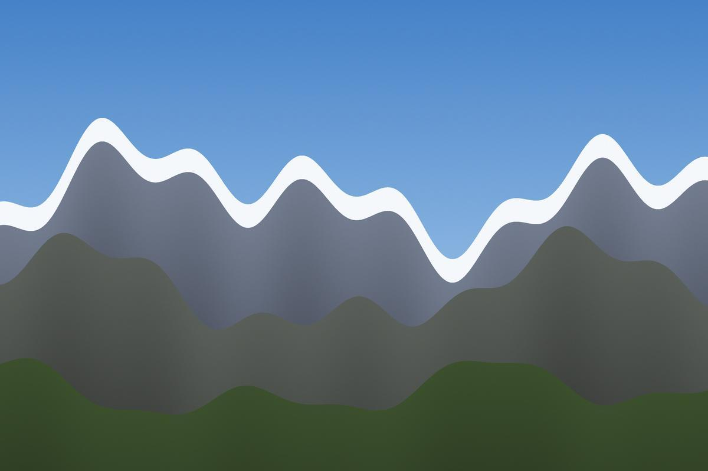
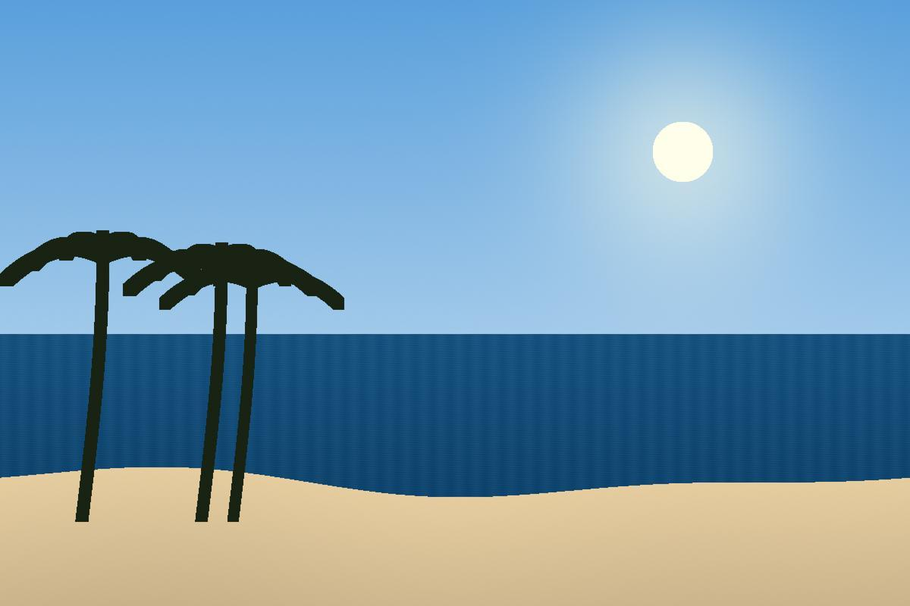
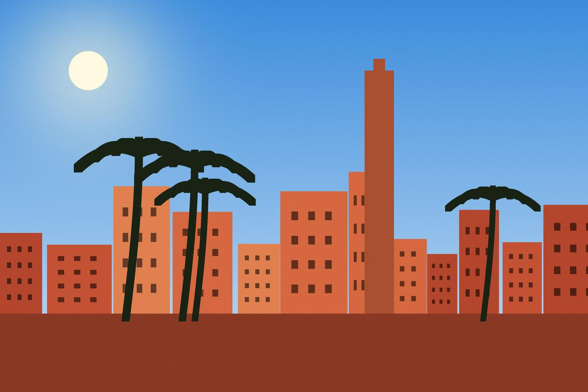
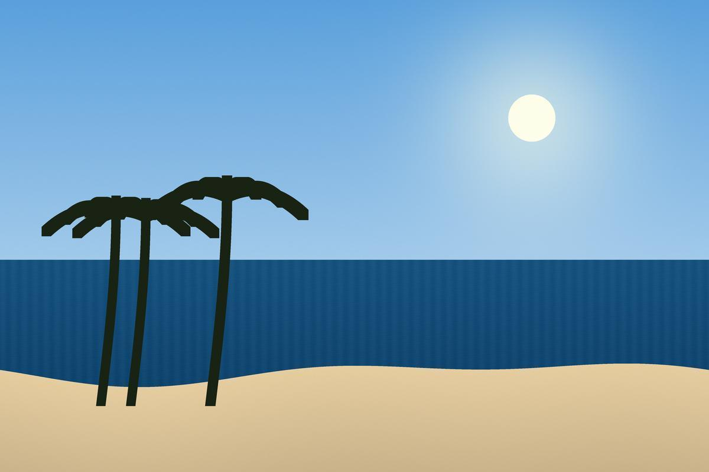
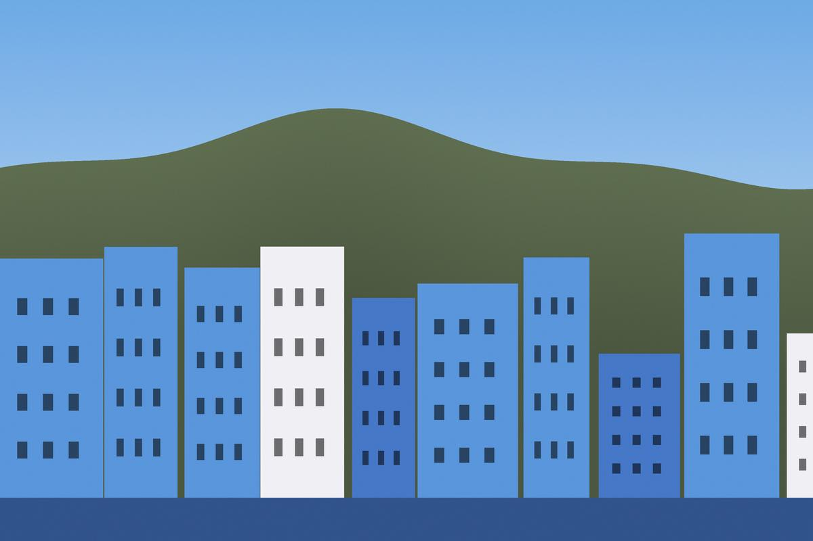
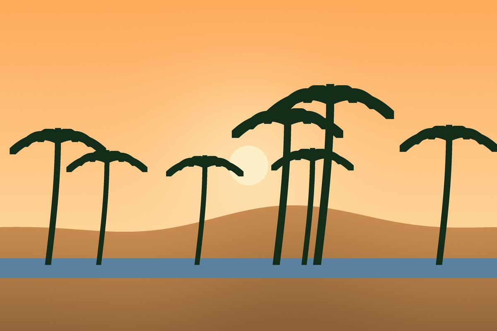
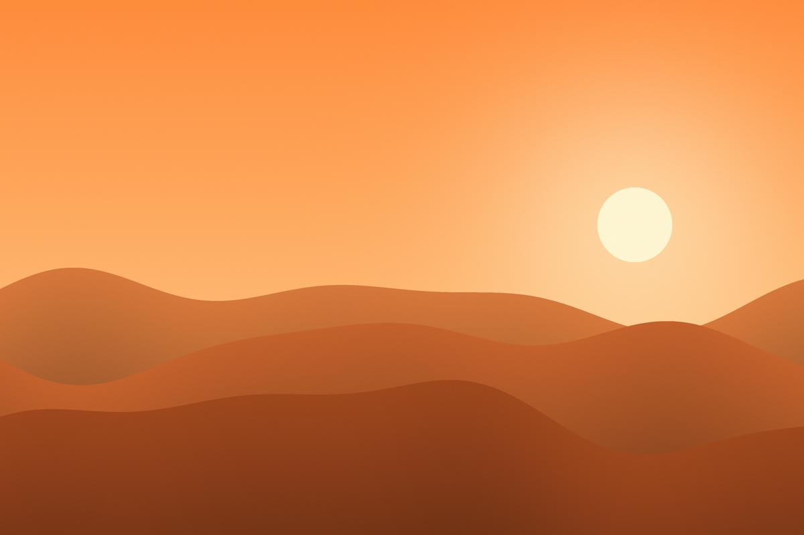
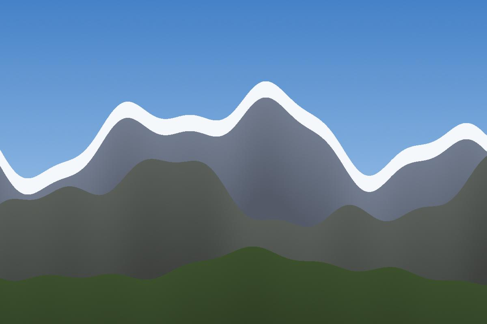
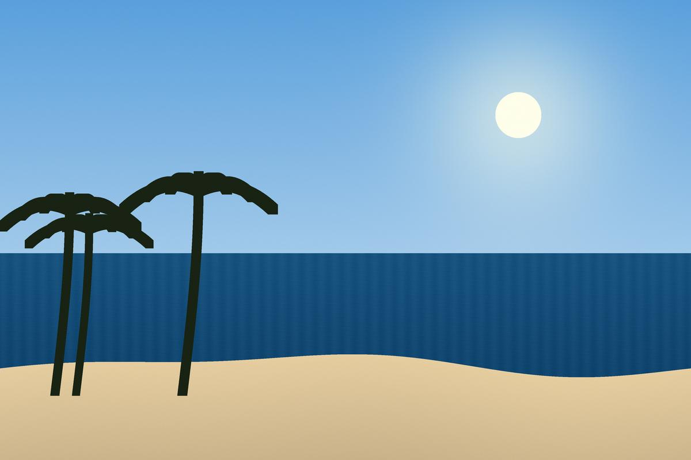
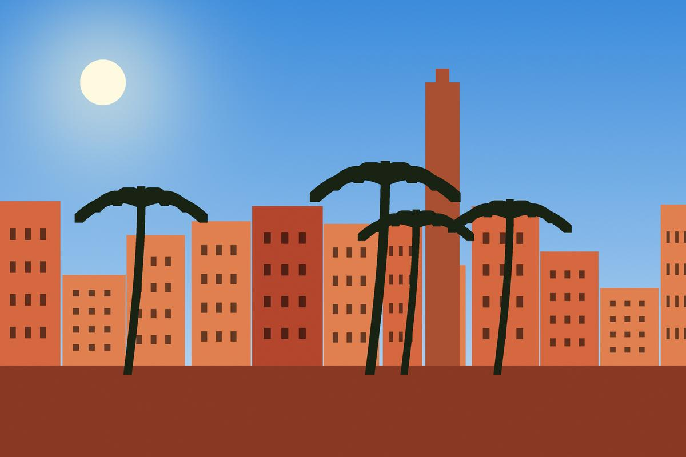
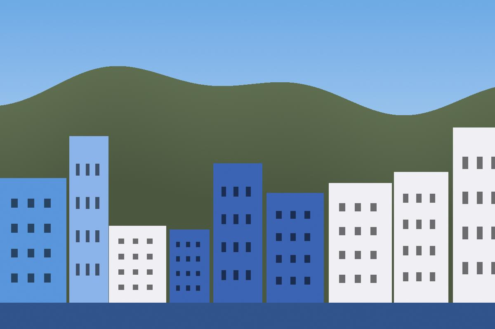
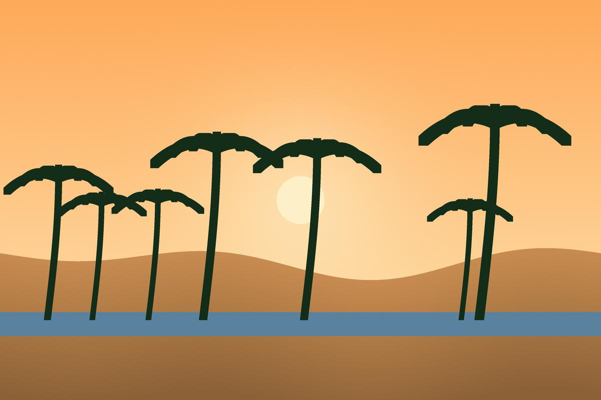
Vidéo de présentation
Le son du désert
Écoutez le vent du Sahara enregistré par nos guides :
Pour voir plus de photos, cliquez ici.